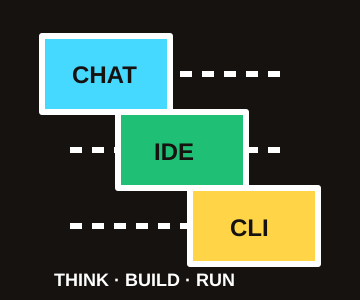
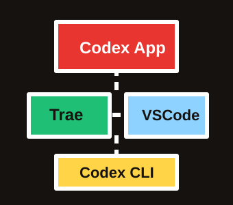
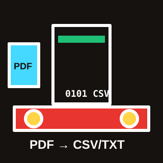
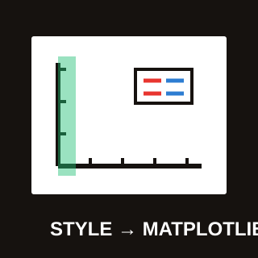

三种 AI 交互方式
先分清入口：聊天框负责想清楚，IDE 负责做出来，CLI 负责跑起来。

聊天框
ChatGPT / Kimi / 豆包 / Gemini / Claude / 秘塔
适合读论文、翻译、总结、头脑风暴、写提纲。
特点：最快开始，但不能直接进项目干活。编程 IDE
Trae / Cursor / VS Code + 插件 / Codex App
适合读项目、改代码、跑脚本、看报错、反复调试。
特点：科研代码和小工具最常用。命令行工具
Codex CLI / Claude Code / shell 自动化
适合服务器、批处理、远程环境、长时间自动任务。
特点：更专业，适合有服务器场景的人。模型怎么选
先用免费入口建立习惯，重要任务再考虑会员和 Agent 工具。
ChatGPT + Kimi + 豆包 + Gemini
聊天框里都能免费开始用，只是会有额度、排队或模型能力限制。
Kimi / DeepSeek / 豆包
中文友好，适合日常读论文和材料整理；会员或 API 按需补充。
ChatGPT
免费可用但模型能力一般；重要写作、代码和多模态任务建议开会员。
Claude
能力强，但账号、验证、封号风险和使用门槛高，本场不作为主推荐。
Gemini
能力也不错，可作为备用；具体价格以购买页或活动页为准。
国外门槛
还可能遇到风控验证、人脸验证、账号稳定性问题。
价格和优惠变化很快，页面只做现场决策参考。
我推荐哪套工具
聊天框解决理解，IDE 解决项目，CLI 解决服务器和自动化。

Codex App + Trae IDE
用 Codex 做复杂任务规划和代码协作，用 Trae 作为更友好的 AI 编程 IDE。
为什么 Trae
字节基于 AI 底座构建，对中文用户更友好，适合编辑项目。
VS Code 用户
可以平滑迁移到 Trae；插件生态和操作习惯大体相近。
注意事项
少见插件和高阶操作可能没完全适配，VS Code 可作为备选。
实际覆盖
Python、Markdown、LaTeX、SSH 远程连接服务器都能覆盖。

从“贴报错”到“进项目修”
展开提示词与素材入口
请先阅读当前 Python 项目，不要立刻修改。 目标：修复实验数据汇总脚本，让它能读取 data/experiment_log.csv，输出 results/summary.csv 和 results/trend.txt。 请先告诉我项目结构、入口文件、当前 bug、最小修改方案和运行验证命令。确认后再改文件。
人工核验点
- loss/time_s 是否按数值处理
- results 目录是否自动创建
- 输出是否和 expected 对得上

36 个 PDF → 成果统计表
展开提示词与真实结果
请基于 sample_pdfs 中的专利 PDF 和现有脚本，完成一次可复现的专利整理演示。 要求：说明字段、运行样本、输出 CSV/TXT、标出人工核验字段，不编造 PDF 中不存在的信息。
真实结果摘要
- 完整材料：36 个 PDF
- 已授权：23 项
- 已申请：13 项
- 交付包含 3 个样本 PDF

翻译文字，锁住结构
展开提示词与结构保护对象
请把 draft_cn.tex 翻译为英文学术论文表达。 硬性约束：不修改任何 LaTeX 命令、label、ref、cite、公式和图表环境；只翻译自然语言；统一 glossary.md 中的术语。
结构保护
- equation / label / ref
- cite / figure / table
- bibliography 和术语表

把“好看”拆成绘图参数
展开提示词与图件输出
请根据 data/solver_convergence.csv 生成论文风格 Matplotlib 图。 要求：高对比配色、粗线条、清晰 marker、右上角图例；输出 PNG 和 PDF；代码参数集中，方便替换数据。
输出文件
- outputs/paper_style_plot.png
- outputs/paper_style_plot.pdf
- plot_paper_style.py

科研想法 → 离线可用 Demo
展开提示词与 Demo 入口
请把这个科研想法做成一个离线 HTML demo。 要求：纯 HTML/CSS/JS，无后端、无 CDN；首页直接展示可交互工具；页面适合现场展示；所有文件使用相对路径。
可迁移场景
- 组会汇报页
- 数据展示页
- 参数探索小工具
更多科研效率连招
把工具串起来，而不是指望一个工具做完所有事。
Zotero + AI
文献管理、BibTeX、综述表。
Doc2X + AI
PDF 转 Word / LaTeX / Markdown 后再校对。
Kimi / 秘塔 / ChatGPT
快速读论文、备课、整理组会材料。
图像能力
科研配图、技术路线图、方法示意图。
Trae / Cursor / Codex
把想法变成脚本、网页和小工具。
个人成品展示
目的不是炫技，而是说明 AI Agent 能把想法推进成可用项目。
HTML 汇报页面
交互展示、图表嵌入、长期保存。
个人网站
项目、论文、简历、联系方式。
考研辅导网站
课程信息、资料目录、答疑入口。
闲鱼发货工具
重复流程自动化，迁移到科研批处理。
本展示站
现场分享也可以做成可复用项目。